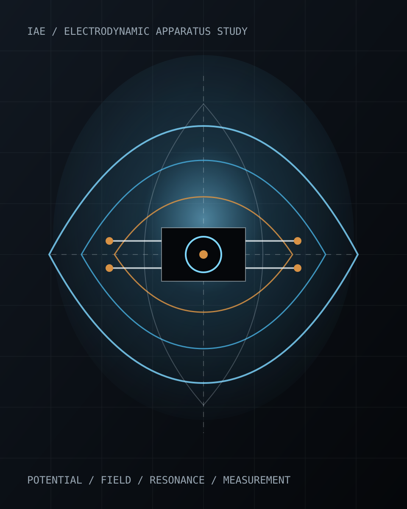

Potential Structures
Mapping electrical potential around electrode geometries, dielectric boundaries, terminal arrangements, and charged assemblies.
 IAE
Institute of Applied Electrodynamics
IAE
Institute of Applied Electrodynamics
Experimental electrodynamics laboratory
Electrical potential, induction, resonance, and electromagnetic field structure investigated through disciplined apparatus, measurement, and published experimental records.

Mission
The institute studies electrodynamic phenomena as engineering primitives: potential gradients, displacement effects, induction, resonance, coupling, shielding, propagation, and material response.
Each investigation is documented from apparatus to observation so results can be revisited, corrected, repeated, and eventually developed into useful instruments or formal publications.
Research Log
Public entries are loaded from research-log/manifest.json.
To publish a new experiment, upload one entry file and add it to the
manifest.
Draft privately, polish the public version, copy the template in
research-log/_template.json, then list the new file in
research-log/manifest.json.
Loading research log...
Projects
Mapping electrical potential around electrode geometries, dielectric boundaries, terminal arrangements, and charged assemblies.
Coils, capacitive bodies, tuned circuits, and coupled oscillators studied as controllable electrodynamic instruments.
Near-field energy exchange, induction, shielding, loading, and measurement methods for engineered field interaction.
Publications
Technical memorandum
Drafting: fixture geometry, calibration sequence, and uncertainty notes.
Research brief
Planned: methods for recording potential, geometry, and boundary conditions.
Laboratory
Oscilloscope, signal generation, voltage mapping, impedance checks, frequency response, and thermal observation.
Coil winding, electrode fixtures, insulated frames, material samples, terminal bodies, and prototype assemblies.
Data tables, field sketches, instrument settings, repeatability notes, and public/private publication workflow.
Join
The institute is forming around disciplined experiments in applied electrodynamics. Future collaborators can contribute measurement skill, circuit design, materials knowledge, mathematical modeling, fabrication, or technical writing.